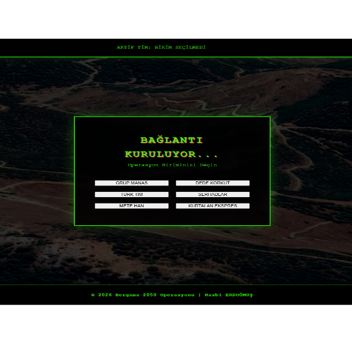

Bergama 2050: İzohips Oyunu ile Coğrafi & Dijital Becerileri Tasarlamak

Oyuna gitmek için resmin üzerine tıklayınız.
Coğrafya eğitimi, statik haritalardan ve ezber bilgilerden kurtulup interaktif bir deneyime dönüşebilir mi? Bergama'nın binlerce yıllık topografyasını, 2050 yılının siber-operasyonel kurgusuyla birleştiren "İzohips Operasyonu", bu sorunun cevabı olarak geliştirildi.
Projenin Vizyonu: Siber-Coğrafya
Bu çalışma, klasik bir "izohips okuma" etkinliğinin çok ötesinde, öğrenciyi bir Saha Ajanı veya Karargâh Analisti rolüne büründüren bir simülasyondur.
Öne Çıkan Teknik Özellikler
Canlı Harita Entegrasyonu
OpenStreetMap ve uMap altyapısı kullanılarak oluşturulan dinamik haritalar sayesinde, öğrenciler gerçek koordinatlar üzerinde strateji geliştirir.
Görev Odaklı Öğrenme
Proje, 10 farklı kritik görevden oluşur. Her görev, izohips eğrilerinden eğim analizine, bakı etkisinden vadi-sırt ayrımına kadar coğrafi becerileri test eder.
Gerçek Zamanlı Takip
Firebase Realtime Database entegrasyonu ile öğretmenler, öğrencilerin sahadaki ilerleyişini "Karargâh Paneli" üzerinden anlık olarak izleyebilir.
Siber Arayüz (Cyber UI)
Oyunun tasarımı, modern operasyon terminallerinden esinlenerek hazırlanmış, öğrencinin motivasyonunu ve "akış" (flow) halini en üst düzeye çıkaran bir atmosfer sunar.
Pedagojik Yaklaşım
"İzohips Operasyonu", Yenilikçi Öğrenme Alanları ve Maarif Modeli ile tam uyumlu olarak; eleştirel düşünme, veriyi yorumlama ve problem çözme becerilerini merkeze alır. Soyut bir kavram olan yükselti eğrileri, bu simülasyon sayesinde dokunulabilir, gezilebilir ve analiz edilebilir bir gerçekliğe dönüşür.
Deneyime Katılın
Eğitimde teknoloji entegrasyonunun en güncel örneği olan bu projeyi sınıflarınızda uygulaması için yakında detaylı bir kılavuz eklenecektir.
Oyun İçi Görüntüler
İzohips Operasyonu'ndan Ekran Görüntüleri
Resimleri sağa/sola kaydırarak inceleyebilirsiniz.